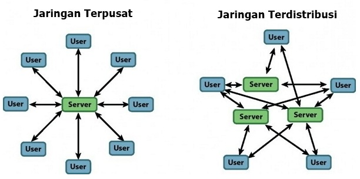

Sejarah jejaring komputer dimulai pada 1940-an di Amerika melalui proyek MODEL I oleh laboratorium Bell dan Universitas Harvard, yang dipimpin oleh Howard Aiken. Proyek ini awalnya bertujuan memanfaatkan satu komputer untuk banyak proses menggunakan Batch Processing. Pada 1950-an, konsep Time Sharing System (TSS) muncul, memungkinkan beberapa terminal terhubung ke satu komputer, menggabungkan teknologi komputer dan telekomunikasi.
Pada 1969, DARPA memulai proyek ARPANET untuk menghubungkan komputer-komputer secara organik. Pada 1970, lebih dari 10 komputer berhasil dihubungkan, memunculkan konsep Distributed Processing, di mana beberapa komputer host bekerja secara paralel melayani terminal-terminal. Integrasi mendalam antara komputer dan telekomunikasi menjadi penting dalam proses ini.
Pada 1972, Roy Tomlinson menyempurnakan program email untuk ARPANET dan memperkenalkan simbol "@" sebagai penanda "at". Program ini segera populer. Pada 1973, ARPANET meluas ke luar AS, dengan University College London menjadi anggota pertama di luar AS. Di tahun yang sama, Vinton Cerf dan Bob Kahn mempresentasikan konsep awal Internet di Universitas Sussex. Pada 26 Maret 1976, Ratu Inggris mengirim email pertama dari Royal Signals and Radar Establishment. Pada 1977, lebih dari 100 komputer terhubung ke ARPANET.
Pada 1979, Tom Truscott, Jim Ellis, dan Steve Bellovin menciptakan USENET. Pada 1981, France Telecom meluncurkan telepon televisi pertama. Tahun 1982, protokol TCP/IP diperkenalkan sebagai standar komunikasi internet, dan EUNET muncul di Eropa. Pada 1984, Sistem Penamaan Domain (DNS) diperkenalkan untuk menyeragamkan alamat jejaring. Jumlah komputer yang terhubung mencapai 10.000 pada 1987.
Pada 1988, Jarkko Oikarinen memperkenalkan Internet Relay Chat (IRC), yang mempercepat pertumbuhan jejaring hingga lebih dari 100.000 komputer pada 1989. Tahun 1990, Tim Berners-Lee menciptakan World Wide Web (WWW). Pada 1992, jumlah komputer terhubung melampaui satu juta, dan istilah surfing muncul. Pada 1994, internet memiliki 3.000 situs, e-retail mulai muncul, Yahoo! didirikan, dan Netscape Navigator 1.0 diluncurkan.
Jejaring komputer berdasarkan geografis terbagi menjadi:
Jejaring komputer berdasarkan fungsi terbagi menjadi:
Berdasarkan topologi jaringan, jaringan komputer dapat dibedakan atas:
Berdasarkan distribusi sumber informasi/data
Berdasarkan media transmisi data